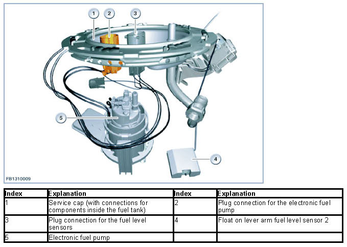
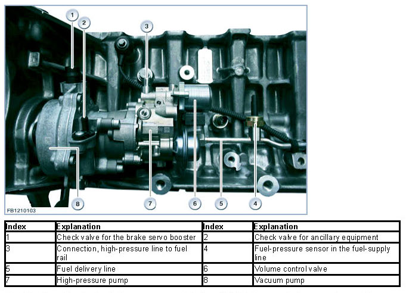
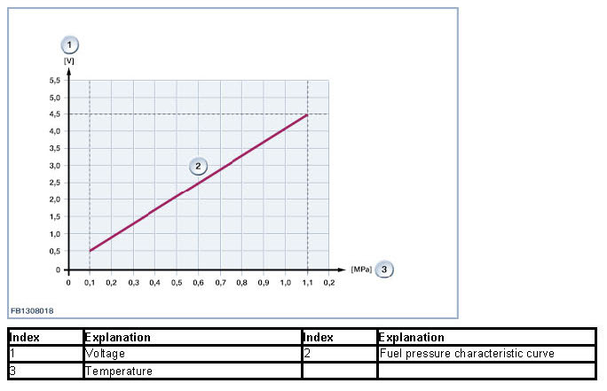
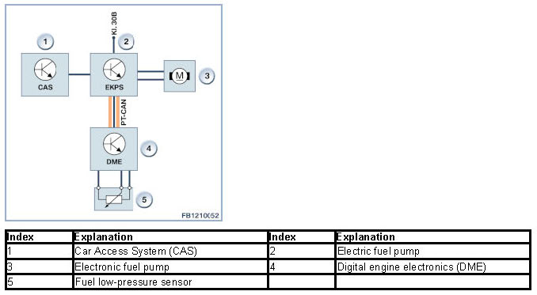

Low Pressure Fuel System
Low Pressure Fuel System
Low pressure fuel system
The N55 6-cylinder spark-ignition engine relies on direct fuel injection. The direct fuel injection increases the performance. The maximum fuel pressure is 200 bar (idle: 50 bar, WOT full load: 200 bar). The use of direct fuel injection creates a homogeneous mixture preparation in the entire combustion chamber. Homogeneous mixture preparation means that the fuel air ratio is regulated stoichiometrically in the same way as for intake pipe fuel injection (Lambda = 1). A stoichiometric air-fuel mixture contains a ratio of 14.7 kilograms of air to 1 kilogram of fuel. Homogeneous mixture formation renders it possible to use a conventional emissions control system. Fully-sequential multipoint injection with selective control for each individual cylinder offers the following advantages:
- Optimal fuel mixtures for each individual cylinder
- The injection duration is precisely adapted to the engine's instantaneous operating conditions (engine speed, load factor and temperature)
- Responds to changes in load by correcting the injection duration specifically for the individual cylinder (during the intake stroke the injection duration can be corrected with a supplementary post-injection discharge as well as by extending or reducing the injection period)
- Selective deactivation of individual cylinders is also available (for instance, in response to a defective ignition coil)
- Allows individual diagnosis of each fuel injector.
The fuel-pressure sensor transmits a voltage signal to the engine-management control unit (DME control unit) indicating the system pressure between the electric fuel pump and the high-pressure pump. It monitors system pressure (fuel pressure) upstream from the high-pressure pump. The DME digital engine electronics system runs continuous checks to compare the specified setpoint pressure with the actual pressure. The DME responds to deviations with action such as using the EKPS electric fuel-pump control to reduce the voltage to the electric fuel pump. This regulates the delivery pressure at which fuel is supplied to the engine to the correct level.
Brief component description
The following section describes the following components in the low-pressure fuel system:
- Electric fuel pump
- Fuel-pressure sensor.
electronic fuel pump
The electric fuel pump is an in-tank unit; its function is to supply fuel to the engine.
In the "electronic control of the fuel pump" system, the electronic fuel pump is activated in line with requirements. The DME employs driver demand and instantaneous engine operating conditions to calculate the quantity of fuel required at any specific juncture. The required fuel quantity is transmitted to the EKPS electronic fuel pump control unit in the form of a message on the CAN bus.
The EKPS electronic fuel-pump control unit translates this message into a PWM output voltage. This process is supported by characteristic curves for fuel requirement stored in the EKPS electronic fuel-pump control system. The characteristic curves are coded for the specific motor and model.
The EKPS electronic fuel pump control unit uses a pulse width-modulated output voltage (PWM signal) to regulate the speed of the electric fuel pump, thereby ensuring that the fuel pump delivers precisely the amount of fuel required.
The electric fuel pump delivers fuel from the tank to the high-pressure pump through the supply line at a pressure of roughly 5 bar. This primary presure is monitored by the fuel-pressure sensor. The electric fuel pump's delivery rate is controlled by demand.

The fuel-pump relay activates the electric fuel pump when Terminal 15 is switched on.
Fuel pressure sensor
The fuel-pressure sensor is threaded into the fuel-supply line.
The fuel-pressure sensor monitors the pressure of the fuel in the fuel-supply line. The electric fuel pump's delivery rate is controlled by demand.
The fuel-pressure sensor is employed for the EKPS unit's electronic control of the fuel pump. The DME digital engine electronics system assesses the analogue output signal.
Strain gauges are employed to monitor the fuel pressure. A membrane equipped with strain-gauge strips is deflected by the applied pressure. The changes in resistance in the strain gauge are electronically detected by a Wheatstone bridge and evaluated. The voltage measurement then proceeds to the EKPS electronic fuel-pump control system as the actual value.

The information indicating the fuel pressure proceeds to the DME digital engine electronics system module through a signal wire. The fuel pressure signal for evaluation fluctuates depending on the pressure. The measuring range of approx. 0.5 - 4.5 volts corresponds to a fuel pressure of 0.1 MPa (1 bar) to 1.1 MPa (11 bar).

System overview

Notes for Service department
General notes
NOTICE: Allow the engine to cool down.
Never start repair work on the fuel system without allowing the engine to cool down first. The coolant temperature must not exceed 40 °C. Compliance with this instruction is absolutely vital, as otherwise residual pressure within the fuel system could result in uncontrolled fuel spray.
NOTICE: Protect ignition coils against contamination.
When carrying out repair work on the N55 always ensure that the ignition coils are not contaminated by fuel. Contact with fuel substantially reduces the ability of silicone to provide effective sealing. The result would be arcing between the spark plugs and the cylinder head, leading to ignition miss. Prior to working on the fuel system always remove the spark plugs and seal off the spark plug wells with shop towels to protect them from fuel.
We can assume no liability for printing errors or inaccuracies in this document and reserve the right to introduce technical modifications at any time.